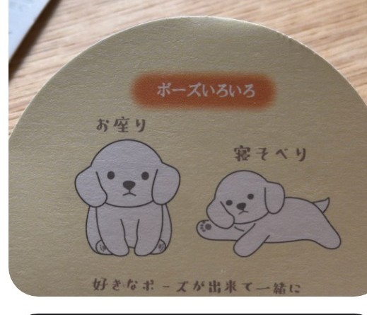

A Japanese vocabulary camera
Photograph a word.
Walk away with a flashcard.
Point the camera at manga, a game, a sign. New words light up in the viewfinder. Snap it, tap the ones you don’t know, and the card keeps the boxed photo — a memory of the page, not a floating word.

The loop
See it, keep it, actually remember it.
The same cycle whether you’re mining a manga chapter or a Switch menu.
Capture
New words get a box in the live viewfinder before you shoot; words you already know stay quiet. After the photo, those same boxes sit on the image, matched to the chips — so the card keeps a picture of the word where you found it.
Inbox
Unmined photos wait in sessions grouped by time and place, not a flat pile. Swipe to skip; Add and Snooze sit at the bottom. Chain through a whole page with More, or stash it and come back later.
Review
Each deck has its own FSRS-6 queue — the scheduler Anki uses now. Flip a card, grade Again / Hard / Good / Easy, and stop whenever. Sessions are capped on purpose. You can also grade from a Home Screen widget without opening the app.
Dex
Every kanji you’ve caught lights up on a field-guide grid. Focus a JLPT level, or tap any character and jump to the exact cards and photos where you found it.
What’s on a card
The card writes itself from the photo.
Built for reading on the couch and mining on the train — not typing words into a search box.
Readings, meaning, audio
Furigana is filled in automatically. JMdict supplies the definition. Tap to hear the word spoken, no network required.
The sentence it came from
The line on the photo is saved with the card, plus a second Tatoeba example with English. “Where did I see this?” is the boxed photo, not a guess.
Boxes on the word
The camera draws a box around vocabulary you don’t have yet. The saved photo keeps those boxes, in the same colors as the chips, so reviewing a card is looking at the page you mined.
Decks you name
Travel, a game, a show — pick or create a deck while you capture. Last choice sticks. Each deck reviews on its own schedule.
A searchable library
Every card, listed like a paper dictionary or flicked through as photos. Search, filter by recency, jump by あかさたな.
Stays on the phone
OCR, dictionary lookup, and review all run on-device. No account, no cloud, no network required to mine or study.
A closer look
The same screens, with a real photo.
Boxes on the word in the viewfinder, then on the saved photo — same layout as the app.
Cards
48/48Dex
N5No Anki dread
Review a card without opening the app.
Sessions stay small. The Home Screen widget is one card, not a due-count staring you down.
- FSRS-6, per deck. Same modern scheduler Anki ships with. Each deck has its own due and new queue, with a daily new-card cap and a session cap you set.
- Flip, then grade. Front is the word on the photo. Back is the reading, meaning, mined sentence, and a spoken example. Again / Hard / Good / Easy, with the next interval on the button.
- Home Screen widget. One due or new card, graded in place. Lock Screen shows the pet. Action Button and Control Center go to the next card or straight into the camera.
- Stop after two cards. Nothing is all-or-nothing. Come back later; the queue waits without guilt.
好きなポーズが出来て一緒に過ごすだけで気分がほっこり
Motivation, not guilt
A companion that roots for you — and a streak you can see.
Showing up feeds it. Missing a day doesn’t kill it, reset it, or send a lecture.